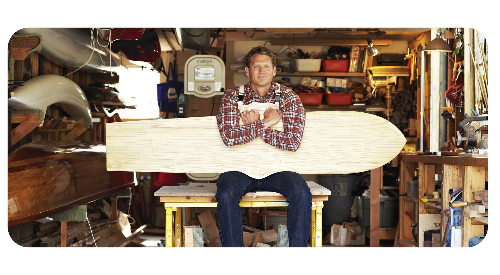
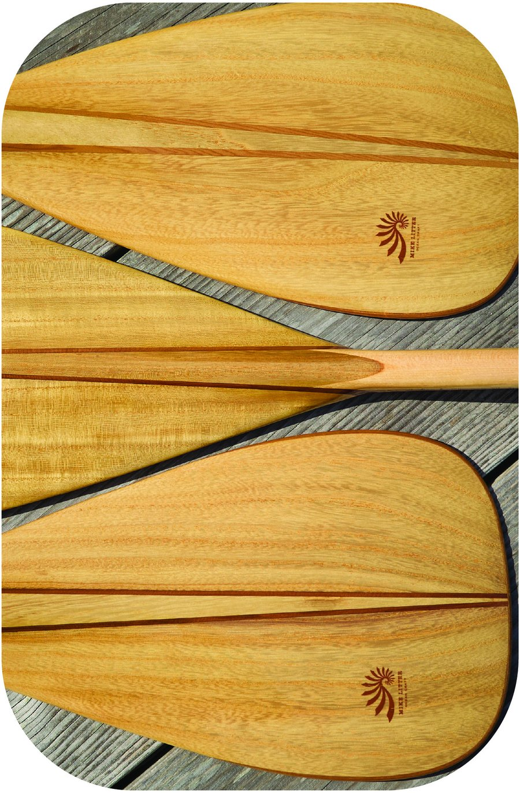
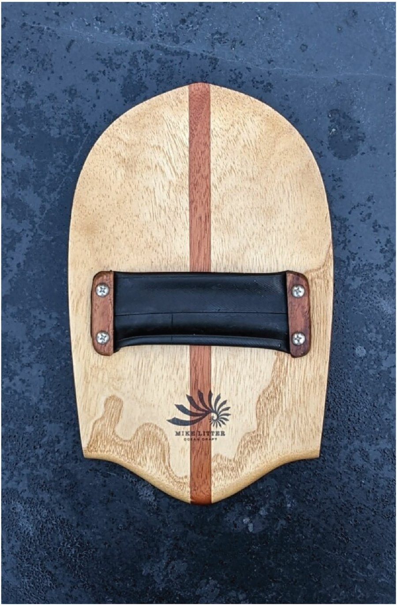
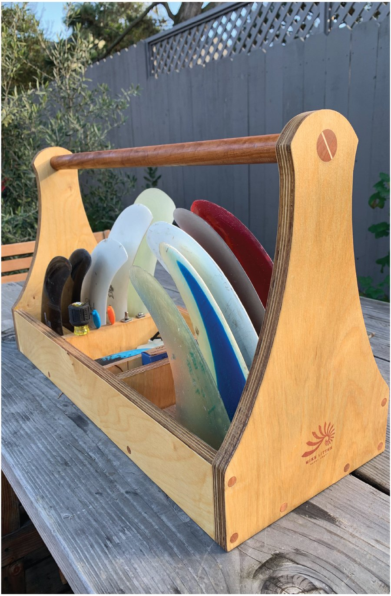
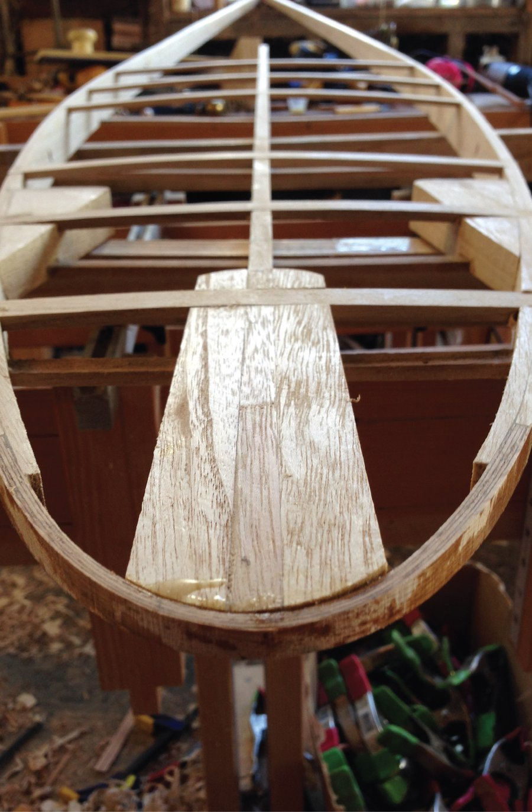
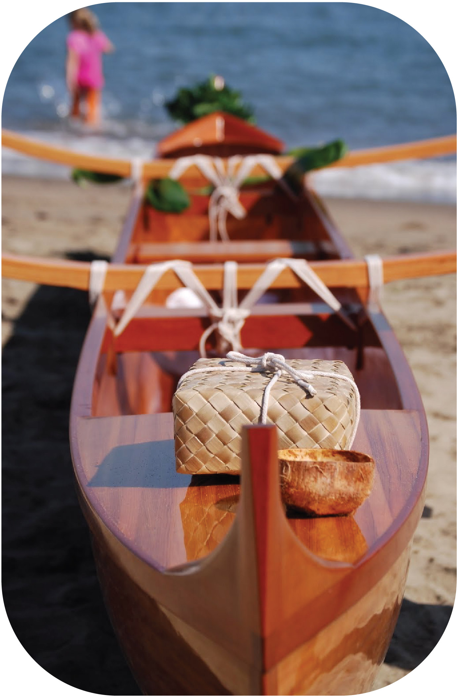

Every ocean craft that is made by hand from wood carries a soul. It's always been this way: the instrument itself is a reflection—of the maker, the natural materials, the tools, and the person who will use it. For centuries people took to the sea upon craft made by master builders from resources close at hand. In doing so, seafarers developed an intimacy with their equipment and the process by which they were constructed.
Modern manufacturing has disconnected us from what makes our gear soulful. A one-of-one ocean craft, imprinted with the signature of both maker and user, has been replaced with standardized, one-size-fits-all manufacturing.
I build custom ocean craft in my small San Francisco shop from wood and little else. I see it as a return to something lost—an attempt to reconnect with the soul of the instrument.




